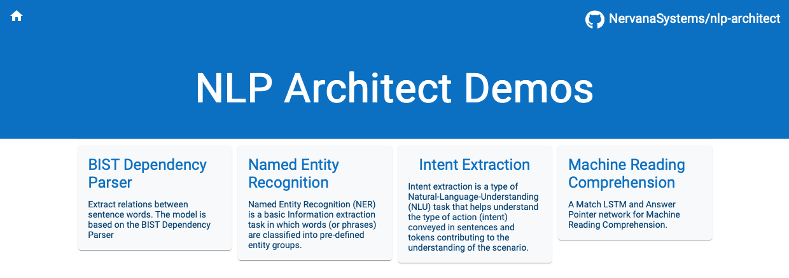

Using as a REST service¶
Overview¶
NLP Architect server is a hug REST server that is able to run predictions on different models configured using NLP Architect. The server includes a web front-end exposing the model’s annotations.
Currently we provide 4 services:
- BIST Dependency parsing
- NER
- Intent Extraction
- Machine Reading Comprehension
The server has two main components:
Servicewhich is a representation of each model’s API.nlp_architect.server.servemodule which is a hug application which handles processing of HTTP requests and initiating calls to the desired model.
The server supports extending with new services using provided API classes, see Annotation Structure Types - Server Responses for more details.
Running NLP Architect Server¶
Starting the server¶
To run the server run the following command:
nlp_architect server -p 8080
The server will run locally on port 8080 and can be queried on /inference directive.
To access the visualization - http://localhost:8080
Requests¶
The following headers are required when communicating with the server:
- Content-Type: “application/json” or “application/gzip”
- Response-Format: The response format, “json” or “gzip”. The default response format is json.
The request content has the following format:
{
"model_name": "ner" | "bist" | "intent_extraction" | "machine_comprehension",
"docs":
[
{"id": 1,
"doc": "Time flies like an arrow. fruit flies like a banana."},
{"id": 2,
"doc": "the horse passed the barn fell"},
{"id": 3,
"doc": "the old man the boat"}
]
}
In the example above, model_name is the desired model to run the documents through and each input document is marked with an id and content.
Responses¶
The server supports 3 types of Responses (see Annotation Structure Types - Server Responses bellow).
Example¶
Request annotations using the NER model:
- BIST parser - Core NLP models annotation structure


Annotation Structure Types - Server Responses¶
The server supports 2 types of annotation structure (responses from the server):
A annotation of a Core NLP model (Part-of-speech (POS), lemma, dependency relations etc.), usually a word-to-label annotation.
An annotation of a more high-level model (Intent Extraction, NER, Chunking, etc.). usually a span-to-label annotation used for higher level of nlp tasks and applications.
Core NLP models annotation structure¶
CoreNLPDoc class is hosting the Core NLP models annotation structure.
(can be imported using: from nlp_architect.common.core_nlp_doc import CoreNLPDoc).
{
"doc_text": "<the_document_text>",
"sentences": list of sentences, each word in a sentence is represented in \
a dict (list(list(dict))). the dict is structured as follows:
{
"start": <start_index> (int),
"len": <word_length> (int),
"pos": <POS_label> (string),
"ner": <NER_label> (string),
"lemma": <Lemma_string> (string),
"gov": <GOV_index> (int),
"rel": <Dependency_Relation_label> (string)
}
}
High-level models annotation structure¶
HighLevelDoc class is hosting the High-level models annotation structure.
(can be imported using: from nlp_architect.common.high_level_doc import HighLevelDoc).
{
"doc_text" : "<the_document_text>",
"annotation_set" : list of all annotations in document (list(string)),
"spans" : list of span dict (list(dict)), each span_dict is structured as follows:
{
"end": <end_index> (int),
"start": <start_index> (int),
"type": <annotation_string> (string)
}
}
Machine Comprehension structure¶
Only for the MachineComprehensionApi response. .. code:: json
- {
- “id”: “<id>”, “answer”: “<answer_text>”
}
Adding new services¶
Adding a new service to the server¶
All the services are declared in a JSON file found at nlp_architect/server/services.json.
In order to add a new service to the server you need to go over 3 steps:
- Detect the type of your service suitable for your model, either Core NLP model or High-level model.
- Create an API class for your service in
nlp_architect/api/folder. Make your class inherit fromAbstractApiand implement all relevant methods. Notice that your inferenceclass_methodmust return eitherCoreNLPDocorHighLevelDoc. - Add the definition of the new service to
services.jsonas follows:
"<service_name>" : {"file_name": "<api_file_name>", "type": <"core"/"high_level>"}